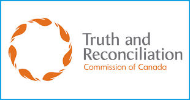
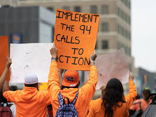
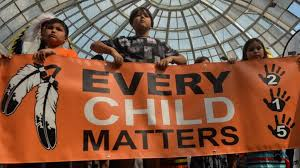

Home
What are the 94 Calls to Action
- Created in 2015 by the Truth and Reconciliation Commission.
- They were made for the Canadian Government to ensure Indigneous communities are able to get the reconciliation they deserve.
- Made of 94 fulfilments which also hold the governement accountable on their progress towards Reconciliation.
- They address a wide range of topics from Calls to Actions regarding sports and media to culture and language.

Call to Action #1
- The first Call to Action is the main on we will be discussing here.
- Its main focus is on the reduction of Indigenous children in child welfare programs.
- The TRC demands it be completed by:
- Providing resources to families to try and keep them together if it is safe to try and ensure the child stays in culturally rich environments.
- Ensuring proper education and training is given to child-welfare investigators about the history and impact of the residential school system.
- Ensuring social workers are educated on the potential of family healing done by Indigenous communities.
- Having child welfare workers to consider the impact of residential schools on children and caregivers.

